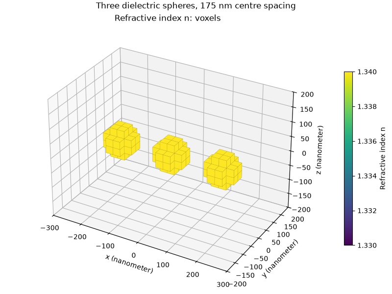
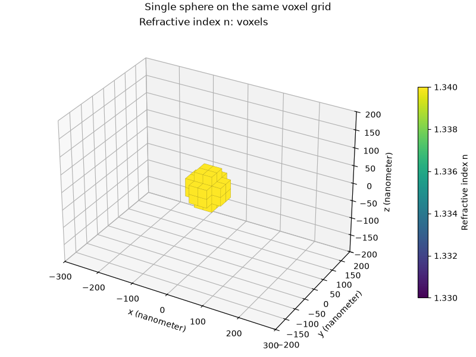
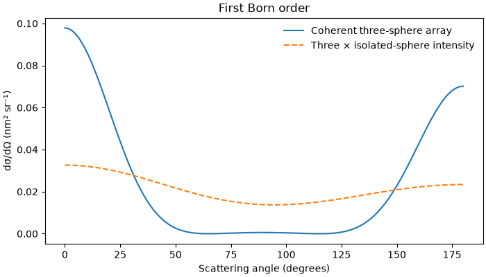

Note
Go to the end to download the full example code.
Finite periodic arrays of dielectric spheres#
Repeat an existing geometric motif on a finite lattice. The lattice vectors are rows of a length-bearing matrix; repetition counts select the number of sites along each row. The complete array is centred on the origin, including half-site offsets for even repetition counts.
This example models weak dielectric contrast with the first Born order. It is a finite sample with edges and coherent interference, without periodic boundary conditions or an effective metamaterial constitutive model.
import matplotlib.pyplot as plt
import numpy as np
from bornsim import Grid, PeriodicMedium, Solver, Source, Sphere
from bornsim.units import ureg
grid = Grid(
shape=(24, 16, 16),
spacing=25 * ureg.nanometer,
)
sphere = Sphere(
radius=50 * ureg.nanometer,
refractive_index=1.34,
)
array = PeriodicMedium(
background_refractive_index=1.33,
motif=(sphere,),
lattice_vectors=np.diag([175, 175, 175]) * ureg.nanometer,
repetitions=(3, 1, 1),
overlap="error",
)
single = PeriodicMedium(
background_refractive_index=1.33,
motif=(sphere,),
lattice_vectors=np.diag([175, 175, 175]) * ureg.nanometer,
repetitions=(1, 1, 1),
)
array_volume = array.to_volume(grid=grid)
single_volume = single.to_volume(grid=grid)
Inspect the three-sphere array#
Each site receives the same motif, preserving its orientation. Geometry outside the voxel box is clipped; these spheres fit completely inside it.
array_figure = array_volume.plot_3d(
backend="matplotlib",
mode="voxels",
field="refractive_index",
)
array_figure.suptitle("Three dielectric spheres, 175 nm centre spacing")
plt.show()

Inspect the single-site reference#
single_figure = single_volume.plot_3d(
backend="matplotlib",
mode="voxels",
field="refractive_index",
)
single_figure.suptitle("Single sphere on the same voxel grid")
plt.show()

Coherent interference along the x-z meridian#
Compare the array with three times the isolated-sphere intensity. That reference omits interference between particles. Because the incident beam travels along +z, all three sites have equal incident phase in the forward direction: their first-order amplitudes add, giving nine times the single intensity rather than three times. The spacing is an integer voxel count, so translated particles have identical discrete masks here.
source = Source(wavelength=633 * ureg.nanometer)
solver = Solver(
source=source,
order=1,
)
angles = np.linspace(0, 180, 121) * ureg.degree
array_result = solver.solve_cut(
target=array_volume,
angles=angles,
)
single_result = solver.solve_cut(
target=single_volume,
angles=angles,
)
array_cross_section = array_result.differential_cross_section.to("nanometer**2 / steradian")
single_cross_section = single_result.differential_cross_section.to("nanometer**2 / steradian")
np.testing.assert_allclose(
array_cross_section.magnitude[..., 0],
9 * single_cross_section.magnitude[..., 0],
rtol=1e-12,
)
figure, axis = plt.subplots(figsize=(7, 4), layout="constrained")
axis.plot(angles.to("degree").magnitude, array_cross_section.magnitude[-1], label="Coherent three-sphere array")
axis.plot(
angles.to("degree").magnitude,
3 * single_cross_section.magnitude[-1],
linestyle="--",
label="Three × isolated-sphere intensity",
)
axis.set(xlabel="Scattering angle (degrees)", ylabel="dσ/dΩ (nm² sr⁻¹)", title="First Born order")
axis.legend(frameon=False)
plt.show()

Total running time of the script: (0 minutes 0.539 seconds)